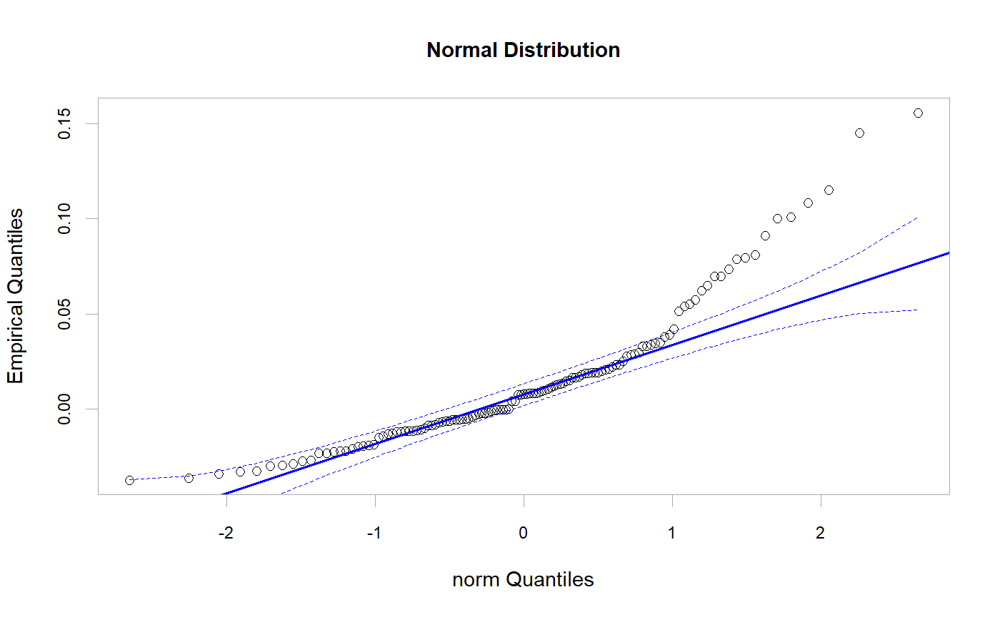
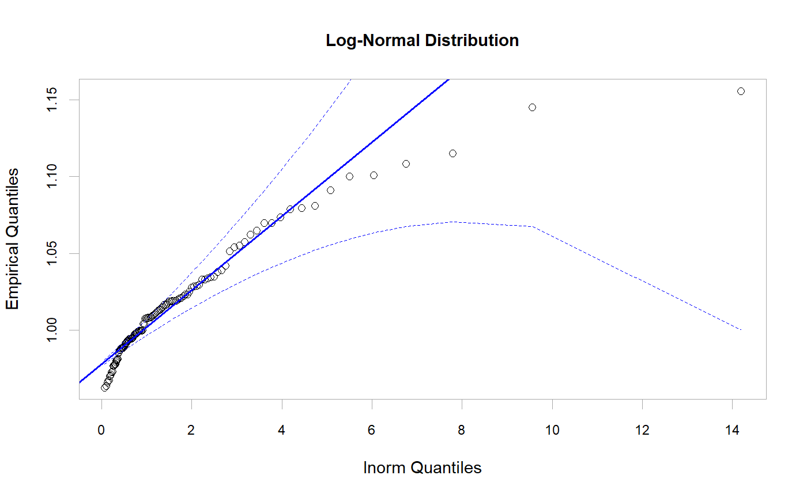

Plot the return data against any theoretical distribution.
chart.QQPlot(R, distribution = "norm", ylab = NULL, xlab = paste(distribution, "Quantiles"), main = NULL, las = par("las"), envelope = FALSE, labels = FALSE, col = c(1, 4), lwd = 2, pch = 1, cex = 1, line = c("quartiles", "robust", "none"), element.color = "darkgray", cex.axis = 0.8, cex.legend = 0.8, cex.lab = 1, cex.main = 1, xaxis = TRUE, yaxis = TRUE, ylim = NULL, ...)
| R | an xts, vector, matrix, data frame, timeSeries or zoo object of asset returns |
|---|---|
| distribution | root name of comparison distribution - e.g., 'norm' for the normal distribution; 't' for the t-distribution. See examples for other ideas. |
| ylab | set the y-axis label, as in |
| xlab | set the x-axis label, as in |
| main | set the chart title, same as in |
| las | set the direction of axis labels, same as in |
| envelope | confidence level for point-wise confidence envelope, or FALSE for no envelope. |
| labels | vector of point labels for interactive point identification, or FALSE for no labels. |
| col | color for points and lines; the default is the second entry in the current color palette (see 'palette' and 'par'). |
| lwd | set the line width, as in |
| pch | symbols to use, see also |
| cex | symbols to use, see also |
| line | 'quartiles' to pass a line through the quartile-pairs, or 'robust' for a robust-regression line; the latter uses the 'rlm' function in the 'MASS' package. Specifying 'line = "none"' suppresses the line. |
| element.color | provides the color for drawing chart elements, such as the box lines, axis lines, etc. Default is "darkgray" |
| cex.axis | The magnification to be used for axis annotation relative to the current setting of 'cex' |
| cex.legend | The magnification to be used for sizing the legend relative to the current setting of 'cex' |
| cex.lab | The magnification to be used for x- and y-axis labels relative to the current setting of 'cex' |
| cex.main | The magnification to be used for the main title relative to the current setting of 'cex'. |
| xaxis | if true, draws the x axis |
| yaxis | if true, draws the y axis |
| ylim | set the y-axis limits, same as in |
| … | any other passthru parameters to the distribution function |
A Quantile-Quantile (QQ) plot is a scatter plot designed to compare the data to the theoretical distributions to visually determine if the observations are likely to have come from a known population. The empirical quantiles are plotted to the y-axis, and the x-axis contains the values of the theorical model. A 45-degree reference line is also plotted. If the empirical data come from the population with the choosen distribution, the points should fall approximately along this reference line. The larger the departure from the reference line, the greater the evidence that the data set have come from a population with a different distribution.
main code forked/borrowed/ported from the excellent: Fox, John (2007) car: Companion to Applied Regression http://socserv.socsci.mcmaster.ca/jfox/
qqplot
qq.plot
plot
library(MASS) data(managers) x = checkData(managers[,2, drop = FALSE], na.rm = TRUE, method = "vector") #layout(rbind(c(1,2),c(3,4))) # Panel 1, Normal distribution chart.QQPlot(x, main = "Normal Distribution", distribution = 'norm', envelope=0.95)# Panel 2, Log-Normal distribution fit = fitdistr(1+x, 'lognormal') chart.QQPlot(1+x, main = "Log-Normal Distribution", envelope=0.95, distribution='lnorm')#other options could include #, meanlog = fit$estimate[[1]], sdlog = fit$estimate[[2]])# NOT RUN { # Panel 3, Skew-T distribution library(sn) fit = st.mle(y=x) chart.QQPlot(x, main = "Skew T Distribution", envelope=0.95, distribution = 'st', location = fit$dp[[1]], scale = fit$dp[[2]], shape = fit$dp[[3]], df=fit$dp[[4]]) #Panel 4: Stable Parietian library(fBasics) fit.stable = stableFit(x,doplot=FALSE) chart.QQPlot(x, main = "Stable Paretian Distribution", envelope=0.95, distribution = 'stable', alpha = fit(stable.fit)$estimate[[1]], beta = fit(stable.fit)$estimate[[2]], gamma = fit(stable.fit)$estimate[[3]], delta = fit(stable.fit)$estimate[[4]], pm = 0) # }#end examples